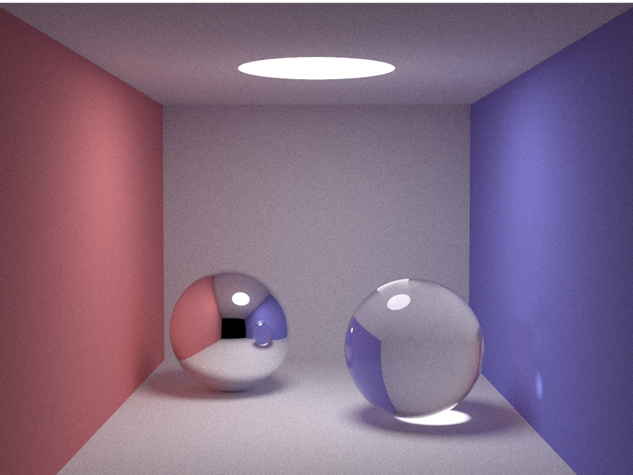

smallpt-cr
A Crystal port of smallpt, Kevin Beason's famous ~100-line unbiased path tracer, written to explore the performance gap between optimized C++ and optimized Crystal.
📖 This is literate programming. The source code is written to be read: every section of the algorithm is explained in prose, side by side with the code that implements it. Start here: Read the annotated, literate source — it's the best way to understand both the path tracing algorithm and this port.

The classic smallpt scene: two diffuse walls (red and blue), a mirror sphere and a glass sphere, lit only by a spherical light, rendered at 800 samples per pixel. Rendered by the Crystal implementation.
What is smallpt?
smallpt is a global illumination renderer written by Kevin Beason in 2006 as a demonstration that physically-based rendering could fit in about 100 lines of C++. It is a path tracer: instead of computing light analytically, it shoots millions of random rays from the camera and follows their bounces around the scene, averaging the results. Given enough samples this converges to the mathematically correct image — no shortcuts, no fake ambient occlusion maps.
Its tricks are the classics of Monte Carlo rendering:
- Cosine-weighted importance sampling for diffuse bounces, so more rays go where the lighting contribution is largest.
- Russian roulette to randomly kill deep ray paths, keeping renders finite without biasing the result.
- Fresnel-based probabilistic reflection/refraction for the glass sphere.
- Tent-filtered supersampling with 2×2 subpixels per camera sample.
Because it is tiny, self-contained and computationally brutal, smallpt became a popular language benchmark: ports exist for dozens of languages, and "how fast can your language render N samples" became a standard shootout.
This project
This repository contains:
| File | Description |
|---|---|
smallpt.cpp | The original algorithm, compiled with g++ -O3 |
src/smallpt.cr | A faithful Crystal port, built with shards build --release |
The port is deliberately algorithmically identical: same scene, same camera, same sampling strategy, same math. Both implementations are single code paths that were then parallelized in the idiomatic way for each language:
- C++: OpenMP (
#pragma omp parallel forover scanlines), as in the original source. - Crystal: fibers distributed over an execution context sized to the CPU count, with each row claiming work from a shared atomic counter.
Each row has its own deterministic random number stream, so output is reproducible regardless of thread scheduling.
Literate documentation
The Crystal source is written in literate style: the prose comments that explain the algorithm are the documentation. The rendered version is published at ralsina.github.io/smallpt-cr and can be regenerated locally with:
$ crycco README.md src/smallpt.cr
Expressiveness: C++ vs Crystal
The C++ original is famously terse — it reads like compressed mathematics:
one-letter variables (r, f, nl, ddn), operator overloading doing double
duty (% is cross product), implicit conversions everywhere, and all three
material types dispatched inside one deeply nested function. It's brilliant,
and nearly unreadable without the accompanying notes.
The Crystal port keeps the same structure but can afford to be descriptive without any runtime cost, because structs are unboxed value types:
record Vecwith named methods (#norm,#dot,#mult) instead of overloaded operators.- A
ReflTenum (Diffuse,Specular,Refractive) instead of integer constants, dispatched with an exhaustivecase. - Descriptive names throughout:
subpixel_x,accumulated,reflection_type,reflected_ray. - Each material's shading logic lives in its own branch or helper method
(
radiance_refractive) rather than nested ternaries.
The interesting result: none of that readability costs performance. The Crystal version compiles down to essentially the same machine code patterns — stack-allocated vectors, no GC pressure in the hot loop, monomorphic dispatch.
Performance
Single-threaded, four languages
To widen the comparison, this repository also vendors two third-party
implementations of the same algorithm (see third_party/):
- Rust: mjm114514/smallpt-rs, patched to use a single worker thread for a fair comparison
- Go: ShadowIce/smallpt.go, already single-threaded
All four render the same scene with the same sampling strategy, each compiled
with CPU-native optimizations (-march=native / --mcpu=native):
| Implementation | 128 spp | Relative |
|---|---|---|
Crystal --release --mcpu=native | ~96.1s | 1.00 |
C++ -O3 -march=native | ~103.5s | 1.08 |
Rust (--release) | ~115.4s | 1.20 |
Go (go build, default GC) | ~132.9s | 1.38 |
Disclaimer: these numbers come from one machine (a 12-core Linux desktop), one workload, and best-of-two runs. Your mileage will vary with CPU, compiler versions, and even compiler flags. Treat them as an anecdote, not a benchmark suite.
The takeaway: all the AOT-compiled languages are within ~10% of each other — effectively parity on numeric workloads like this. Go trails by ~35%, plausibly due to bounds checking and GC interaction in the hot loop.
Native-CPU code generation was attempted for all four: it only helped Crystal
(--mcpu=native, ~18% faster) and C++ (-march=native). For Rust,
RUSTFLAGS="-C target-cpu=native" changed nothing measurable; for Go, neither
GOAMD64=v3 nor GOGC=off helped (GOAMD64=v4 requires AVX-512 and won't run
on the test machine at all).
Multi-threaded
Same machine, 12 threads:
| Implementation | 128 spp | Speedup vs own serial |
|---|---|---|
C++ -O3 -march=native -fopenmp | ~12.6s | 8.2x |
Crystal --release --mcpu=native, execution contexts | ~12.7s | 7.6x |
The C++ vs Crystal gap is effectively zero once both get native-CPU code generation — parity, as far as this setup can measure.
What didn't help: Float32 vectors
Switching Vec from Float64 to Float32 (a trick that gave a big win in
another raytracer port) broke this scene: the room walls are spheres of
radius 10⁵, so sphere intersection computes b*b - op.dot(op) + r*r with
magnitudes around 10²⁰. At Float32 precision (~7 significant digits) that
subtraction is pure noise, producing visibly wrong light levels. The algorithm
is unchanged by precision, but its numerical robustness isn't — smallpt's
giant-sphere room trick needs Float64.
Caveats worth knowing:
- The comparison uses
--release; debug-mode Crystal is roughly an order of magnitude slower. - Since Crystal 1.21, programs start with parallelism set to 1; you must call
Fiber::ExecutionContext.default.resize(worker_count)(as this port does) or setCRYSTAL_WORKERS.
Building and running
$ shards install # no dependencies, but harmless
$ shards build --release # builds bin/smallpt (portable build)
$ crystal build --release --mcpu=native -o bin/smallpt src/smallpt.cr # faster
$ g++ -O3 -march=native -o bin/smallpt-cpp smallpt.cpp # serial C++
$ g++ -O3 -march=native -fopenmp -o bin/smallpt-cpp-mt smallpt.cpp # parallel C++
$ (cd third_party/smallpt-rs && cargo build --release) # vendored Rust port
$ go build -o /tmp/smallpt-go third_party/smallpt.go/smallpt.go # vendored Go port
$ bin/smallpt 500 # render 500 spp (samples/4 subpixel passes)
$ bin/smallpt-cpp-mt 500
$ SMALLPT_WORKERS=1 bin/smallpt 500 # force single-threaded rendering
All write image.ppm (P3 ASCII format) to the current directory, except the
Rust port which writes res.png.
Lint
$ ameba